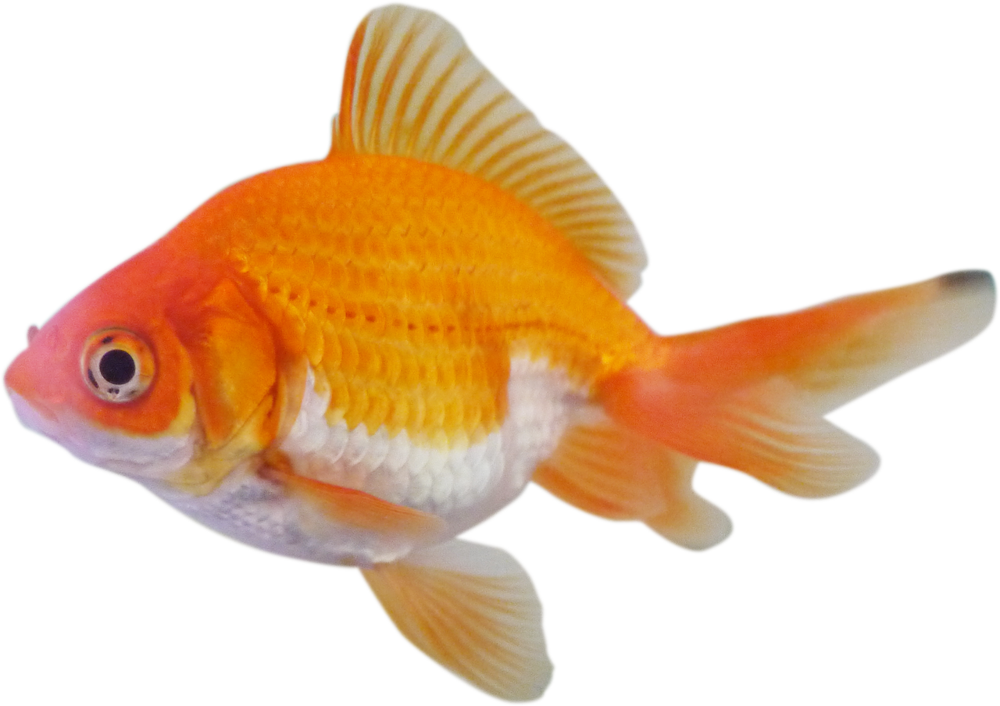

Welcome to the fish web site.Everything you know about fish in this web site.
Bass fish live in lakes.
The Department of History is one of the leading departments in the arena of teaching and learning at the University of Rajshahi. It started its activities with the inception of the University in 1953. The academic activities of this department, however, started in the session 1954-55.The department was built up with the sincerity and erudition of two renowned professors A. R. Mallick and Dr. A. F. Salahuddin Ahmed. At present the department has 14 teachers and more than 6 hundred students. The department has a seminar .
The Department of History is one of the leading departments in the arena of teaching and learning at the University of Rajshahi. It started its activities with the inception of the University in 1953. The academic activities of this department, however, started in the session 1954-55.The department was built up with the sincerity and erudition of two renowned professors Dr. A. R. Mallick and Dr. A. F. Salahuddin Ahmed. At present the department has 14 teachers and more than 6 hundred students. The department has a seminar library with adequate number of reference books,
Interested links
this is usa
this is Bangladesh
this is india
this is Bangladesh
this is Bangladesh
this is Bangladesh
this is Bangladesh
this is Bangladesh